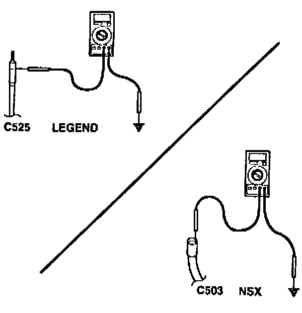
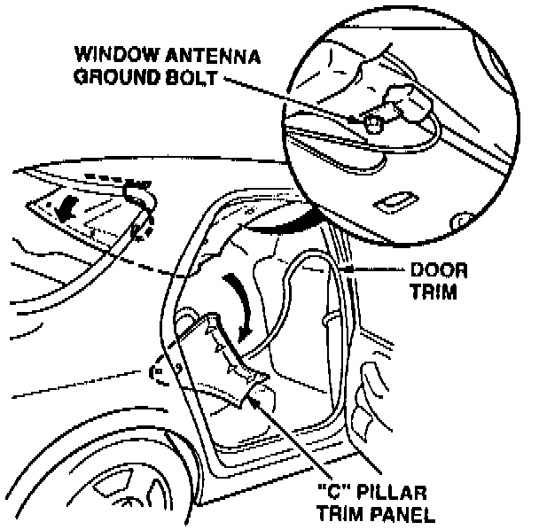
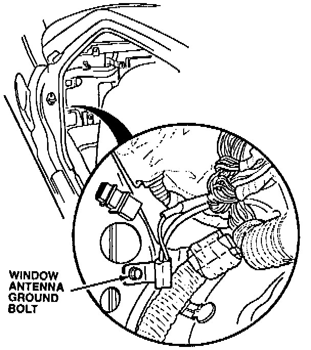
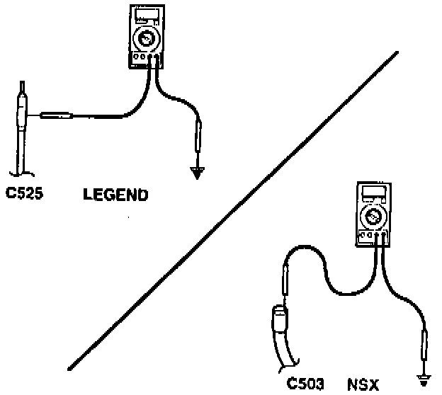
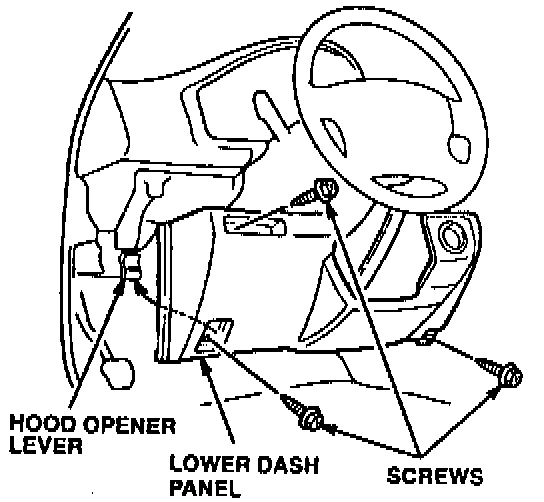
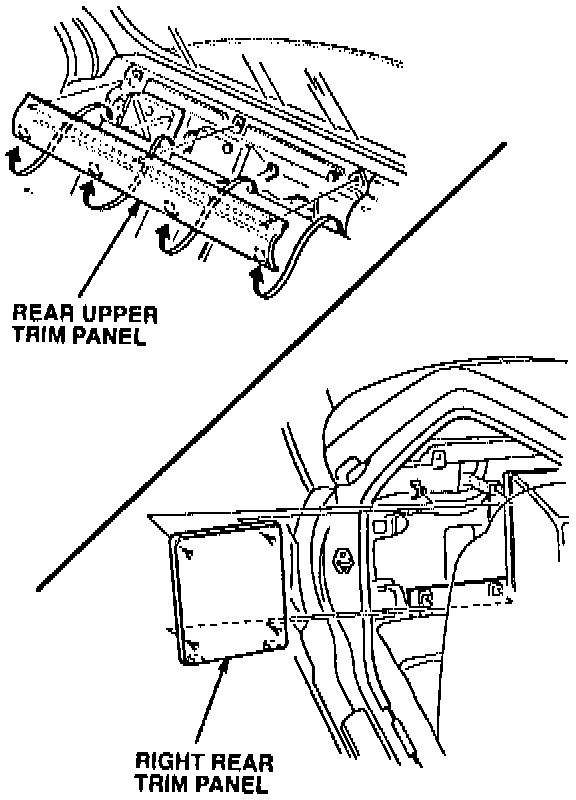
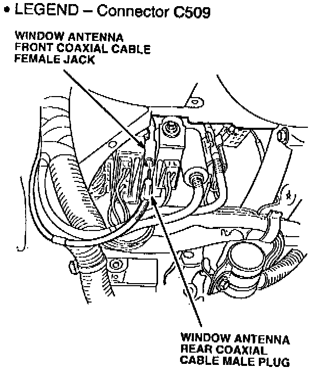
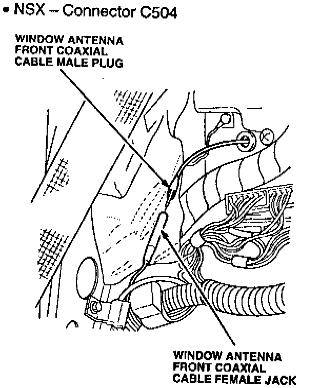
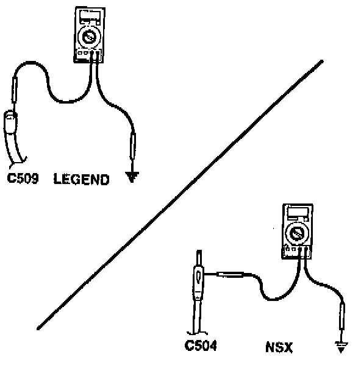

Window Antenna Coaxial Cable Ground Test

1. Measure the resistance between the outer contact of the window antenna front coaxial cable plug/jack at the radio (Legend: C525, NSX: C503) and body ground.
^ If the resistance is more than 1 ohm, go to step 2.
^ If the resistance is less than 1 ohm, continue to troubleshoot the audio system.
2. Remove the following items to access the window antenna ground bolt.

^ LEGEND - Carefully pull down on the right rear door trim; then release the clips for the right "C" pillar trim panel. Roll the "C" pillar trim panel forward, but do not remove the attaching screw. Remove the right rear grab handle and the headliner mounting screws in the right rear corner. Carefully pull down on the headliner to release the trim clips.

^ NSX - Remove the right side sill pad; then pull the door trim away from the door opening. Remove the rear upper trim panel, the right rear trim panel, and the right rear side trim panel.
3. Check for poor ground at the ground bolt. Clean the paint from around the mounting area; then reinstall the ground bolt.

4. After cleaning the window antenna ground bolt, recheck the resistance between the outer contact of the window antenna front coaxial cable plug/jack at the radio (Legend: C525, NSX: C503) and body ground.
^ If the resistance is more than 10 ohms, go to step 5.
^ If the resistance is less than 10 ohms, continue to troubleshoot the audio system.
5. Remove the following items to access the coaxial cable connectors. SRS components are located in this area. Review the SRS component locations, precautions, and procedures in the SRS section of the appropriate service manual before continuing.

^ LEGEND - Remove the lower dash panel; then locate the window antenna coaxial cable on the left side of the steering column.

^ NSX - Move the passenger's seat forward, and remove the rear upper trim panel; then remove the right rear trim panel. Locate the window antenna coaxial cable.


6. Disconnect the window antenna coaxial cable connector.

7. Measure the resistance between the outer contact of the jack/plug at the connector and body ground.
^ If the resistance is more than 10 ohms, replace the window antenna rear coaxial cable. Refer to PARTS INFORMATION.
^ If the resistance is less than 10 ohms, replace the window antenna front coaxial cable. Refer to PARTS INFORMATION.